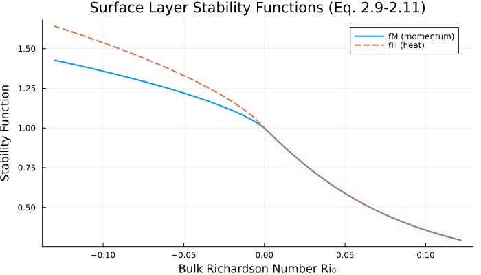
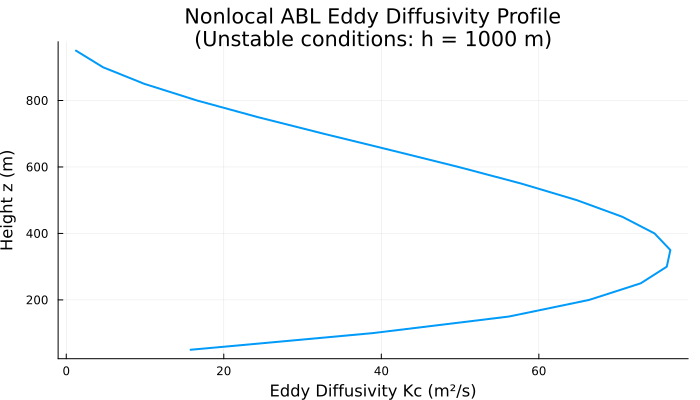
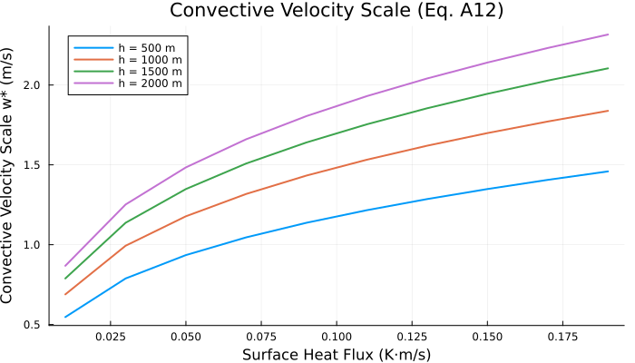
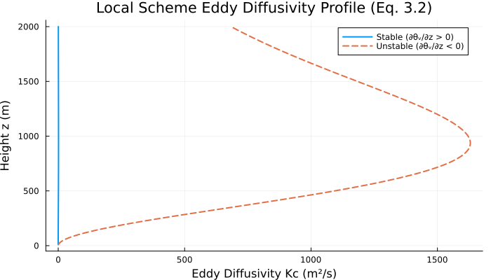

Holtslag & Boville (1993) Boundary Layer Diffusion
Overview
This module implements boundary layer diffusion schemes from the seminal paper:
Reference: Holtslag, A.A.M. and B.A. Boville, 1993: "Local Versus Nonlocal Boundary-Layer Diffusion in a Global Climate Model." Journal of Climate, 6, 1825-1842.
The paper compares local and nonlocal diffusion schemes for the atmospheric boundary layer (ABL) within the NCAR Community Climate Model (CCM2). The key finding is that the nonlocal scheme better represents moisture transport in convective conditions by accounting for large-eddy transports.
AtmosphericDynamics.HoltslagBovilleSurfaceFlux — Function
HoltslagBovilleSurfaceFlux(; name=:HoltslagBovilleSurfaceFlux)Returns a ModelingToolkit.System that computes parameterized surface fluxes for the atmospheric boundary layer following Holtslag & Boville (1993).
Based on "Local Versus Nonlocal Boundary-Layer Diffusion in a Global Climate Model" by A.A.M. Holtslag and B.A. Boville, Journal of Climate, Volume 6, October 1993, pp. 1825-1842.
Key equations implemented:
- Eq. 2.1: Surface momentum flux for u: (w'u')₀ = -Cₘ|V₁|u₁
- Eq. 2.2: Surface momentum flux for v: (w'v')₀ = -Cₘ|V₁|v₁
- Eq. 2.3: Surface heat flux: (w'θ')₀ = Cₕ|V₁|(θ₀ - θ₁)
- Eq. 2.4: Surface moisture flux: (w'q')₀ = DwCₕ|V₁|(q₀ - q₁)
- Eq. 2.5-2.6: Exchange coefficients with stability functions
- Eq. 2.7: Neutral exchange coefficient Cₙ
- Eq. 2.8: Surface bulk Richardson number
- Eq. 2.9-2.11: Stability functions fₘ and fₕ
Example:
using ModelingToolkit, AtmosphericDynamics
sf = HoltslagBovilleSurfaceFlux()
sys = mtkcompile(sf)AtmosphericDynamics.HoltslagBovilleLocalDiffusion — Function
HoltslagBovilleLocalDiffusion(; name=:HoltslagBovilleLocalDiffusion)Returns a ModelingToolkit.System implementing the local diffusion scheme for the atmospheric boundary layer following Holtslag & Boville (1993).
Based on "Local Versus Nonlocal Boundary-Layer Diffusion in a Global Climate Model" by A.A.M. Holtslag and B.A. Boville, Journal of Climate, Volume 6, October 1993, pp. 1825-1842.
Key equations implemented:
- Eq. 3.1: Local flux-gradient relation w'C' = -Kc ∂C/∂z
- Eq. 3.2: Eddy diffusivity Kc = lc² S Fc(Ri)
- Eq. 3.3: Local shear S = |∂V/∂z|
- Eq. 3.4: Mixing length scale 1/lc = 1/(κz) + 1/λc
- Eq. 3.5: Gradient Richardson number Ri = (g/θᵥ)(∂θᵥ/∂z)/S²
- Eq. 3.6: Asymptotic length scale λc = 30 + 270·exp(1 - z/1000)
- Eq. 3.7: Stability function for unstable: Fc = (1 - 18Ri)^(1/2)
Example:
using ModelingToolkit, AtmosphericDynamics
ld = HoltslagBovilleLocalDiffusion()
sys = mtkcompile(ld)AtmosphericDynamics.HoltslagBovilleNonlocalABL — Function
HoltslagBovilleNonlocalABL(; name=:HoltslagBovilleNonlocalABL)Returns a ModelingToolkit.System implementing the nonlocal atmospheric boundary layer diffusion scheme following Holtslag & Boville (1993).
Based on "Local Versus Nonlocal Boundary-Layer Diffusion in a Global Climate Model" by A.A.M. Holtslag and B.A. Boville, Journal of Climate, Volume 6, October 1993, pp. 1825-1842.
Key equations implemented:
- Eq. 3.8: Nonlocal flux w'C' = -Kc(∂C/∂z - γc)
- Eq. 3.9: Eddy diffusivity Kc = κ·wₜ·z·(1 - z/h)²
- Eq. 3.10: Nonlocal transport term γc = a·w*·(w'C')₀/(wₘ²·h)
- Appendix A (Eq. A1-A14): Velocity scales wₜ and wₘ, φₘ and φₕ profiles
- Eq. A7: Surface layer momentum velocity scale wₘ = u*/φₘ
- Eq. A8: Unstable wind shear profile φₘ = (1-15z/L)^(-1/3)
The nonlocal scheme accounts for transport by large convective eddies in unstable conditions, which the local scheme cannot represent.
Example:
using ModelingToolkit, AtmosphericDynamics
nl = HoltslagBovilleNonlocalABL()
sys = mtkcompile(nl)Implementation
using DataFrames, ModelingToolkit, Symbolics, DynamicQuantities
using ModelingToolkit: @named
using AtmosphericDynamics
using OrdinaryDiffEqDefault
using Plots
default(size = (700, 400))Surface Fluxes
The surface flux parameterization computes kinematic fluxes of momentum, heat, and moisture using bulk aerodynamic formulas with stability-dependent exchange coefficients.
Key equations from the paper:
| Equation | Description |
|---|---|
| 2.1 | Surface momentum flux (u): ``(\overline{w'u'})0 = -CM |
| 2.2 | Surface momentum flux (v): ``(\overline{w'v'})0 = -CM |
| 2.3 | Surface heat flux: ``(\overline{w'\theta'})0 = CH |
| 2.4 | Surface moisture flux: ``(\overline{w'q'})0 = DwC_H |
| 2.5 | Momentum exchange coefficient: $C_M = C_N f_m$ |
| 2.6 | Heat exchange coefficient: $C_H = C_N f_h$ |
| 2.7 | Neutral exchange coefficient: $C_N = k^2/[\ln((z_1+z_{0M})/z_{0M})]^2$ |
| 2.8 | Bulk Richardson number: ``\text{Ri}0 = gz1(\theta{v1} - \theta{v0})/(\theta_1 |
| 2.9 | Unstable momentum stability: ``fm = 1 - 10\text{Ri}0/(1 + 75CN[(z1+z{0M})/z{0M} |
| 2.10 | Unstable heat stability: ``fh = 1 - 15\text{Ri}0/(1 + 75CN[(z1+z{0M})/z{0M} |
| 2.11 | Stable stability function: $f_m = f_h = 1/(1 + 10\text{Ri}_0(1 + 8\text{Ri}_0))$ |
State Variables
@named sf = HoltslagBovilleSurfaceFlux()
vars = unknowns(sf)
DataFrame(
:Name => [string(Symbolics.tosymbol(v, escape = false)) for v in vars],
:Units => [dimension(ModelingToolkit.get_unit(v)) for v in vars],
:Description => [ModelingToolkit.getdescription(v) for v in vars]
)| Row | Name | Units | Description |
|---|---|---|---|
| String | Dimensio… | String | |
| 1 | V₁ | m s⁻¹ | Horizontal wind speed at lowest level |
| 2 | Cₙ | Neutral exchange coefficient (Eq. 2.7) (dimensionless) | |
| 3 | Ri₀ | Surface bulk Richardson number (Eq. 2.8) (dimensionless) | |
| 4 | fₘ | Momentum stability function (Eq. 2.9/2.11) (dimensionless) | |
| 5 | fₕ | Heat stability function (Eq. 2.10/2.11) (dimensionless) | |
| 6 | Cₘ | Momentum exchange coefficient (Eq. 2.5) (dimensionless) | |
| 7 | Cₕ | Heat exchange coefficient (Eq. 2.6) (dimensionless) | |
| 8 | wu₀ | m² s⁻² | Surface momentum flux u-component (Eq. 2.1) |
| 9 | wv₀ | m² s⁻² | Surface momentum flux v-component (Eq. 2.2) |
| 10 | wθ₀ | m s⁻¹ K | Surface heat flux (Eq. 2.3) |
| 11 | wq₀ | m s⁻¹ | Surface moisture flux (Eq. 2.4) |
Parameters
params = parameters(sf)
DataFrame(
:Name => [string(Symbolics.tosymbol(p, escape = false)) for p in params],
:Default => [ModelingToolkit.getdefault(p) for p in params],
:Units => [dimension(ModelingToolkit.get_unit(p)) for p in params],
:Description => [ModelingToolkit.getdescription(p) for p in params]
)| Row | Name | Default | Units | Description |
|---|---|---|---|---|
| String | Float64 | Dimensio… | String | |
| 1 | u₁ | 1.0 | m s⁻¹ | Zonal wind at lowest level |
| 2 | V_min_sq | 1.0 | m² s⁻² | Minimum wind speed squared |
| 3 | v₁ | 0.0 | m s⁻¹ | Meridional wind at lowest level |
| 4 | κ | 0.4 | von Karman constant (dimensionless) | |
| 5 | z₀ₘ | 0.0001 | m | Roughness length for momentum |
| 6 | z₁ | 10.0 | m | Height of the lowest model level |
| 7 | θᵥ₀ | 300.0 | K | Virtual potential temperature at surface |
| 8 | θᵥ₁ | 299.0 | K | Virtual potential temperature at lowest level |
| 9 | g | 9.81 | m s⁻² | Gravitational acceleration |
| 10 | θ₁ | 299.0 | K | Potential temperature at lowest level |
| 11 | zero_Ri | 0.0 | Zero Richardson number for comparison | |
| 12 | θ₀ | 300.0 | K | Potential temperature at surface |
| 13 | Dw | 1.0 | Water availability factor (dimensionless) | |
| 14 | q₀ | 0.01 | Specific humidity at surface (dimensionless) | |
| 15 | q₁ | 0.008 | Specific humidity at lowest level (dimensionless) |
Equations
equations(sf)\[ \begin{align} \mathtt{V_1}\left( t \right) &= \sqrt{\mathtt{V\_min\_sq} + \mathtt{u{_1}}^{2} + \mathtt{v{_1}}^{2}} \\ \mathtt{C_n}\left( t \right) &= \frac{\kappa^{2}}{\left( \log\left( \frac{\mathtt{z{_{0 m}}} + \mathtt{z{_1}}}{\mathtt{z{_{0 m}}}} \right) \right)^{2}} \\ \mathtt{Ri_0}\left( t \right) &= \frac{g ~ \mathtt{z_1} ~ \left( - \mathtt{\theta_{v 0}} + \mathtt{\theta_{v 1}} \right)}{\left( \mathtt{V_1}\left( t \right) \right)^{2} ~ \mathtt{\theta_1}} \\ \mathtt{f_m}\left( t \right) &= ifelse\left( \mathtt{Ri_0}\left( t \right) < \mathtt{zero\_Ri}, 1 + \frac{ - 10 ~ \mathtt{Ri_0}\left( t \right)}{1 + 75 ~ \mathtt{C_n}\left( t \right) ~ \sqrt{\frac{\left|\mathtt{Ri_0}\left( t \right)\right| ~ \left( \mathtt{z_{0 m}} + \mathtt{z_1} \right)}{\mathtt{z_{0 m}}}}}, \frac{1}{1 + 10 ~ \mathtt{Ri_0}\left( t \right) ~ \left( 1 + 8 ~ \mathtt{Ri_0}\left( t \right) \right)} \right) \\ \mathtt{f_h}\left( t \right) &= ifelse\left( \mathtt{Ri_0}\left( t \right) < \mathtt{zero\_Ri}, 1 + \frac{ - 15 ~ \mathtt{Ri_0}\left( t \right)}{1 + 75 ~ \mathtt{C_n}\left( t \right) ~ \sqrt{\frac{\left|\mathtt{Ri_0}\left( t \right)\right| ~ \left( \mathtt{z_{0 m}} + \mathtt{z_1} \right)}{\mathtt{z_{0 m}}}}}, \frac{1}{1 + 10 ~ \mathtt{Ri_0}\left( t \right) ~ \left( 1 + 8 ~ \mathtt{Ri_0}\left( t \right) \right)} \right) \\ \mathtt{C_m}\left( t \right) &= \mathtt{f_m}\left( t \right) ~ \mathtt{C_n}\left( t \right) \\ \mathtt{C_h}\left( t \right) &= \mathtt{f_h}\left( t \right) ~ \mathtt{C_n}\left( t \right) \\ \mathtt{wu_0}\left( t \right) &= - \mathtt{u_1} ~ \mathtt{V_1}\left( t \right) ~ \mathtt{C_m}\left( t \right) \\ \mathtt{wv_0}\left( t \right) &= - \mathtt{v_1} ~ \mathtt{V_1}\left( t \right) ~ \mathtt{C_m}\left( t \right) \\ \mathtt{w\theta_0}\left( t \right) &= \mathtt{C_h}\left( t \right) ~ \mathtt{V_1}\left( t \right) ~ \left( \mathtt{\theta_0} - \mathtt{\theta_1} \right) \\ \mathtt{wq_0}\left( t \right) &= \mathtt{Dw} ~ \left( \mathtt{q_0} - \mathtt{q_1} \right) ~ \mathtt{C_h}\left( t \right) ~ \mathtt{V_1}\left( t \right) \end{align} \]
Local Diffusion Scheme
The local diffusion scheme computes eddy diffusivity based on local gradients of wind and temperature.
Key equations:
| Equation | Description |
|---|---|
| 3.1 | Flux-gradient relation: $\overline{w'C'} = -K_c \partial C/\partial z$ |
| 3.2 | Eddy diffusivity: $K_c = l_c^2 S F_c(\text{Ri})$ |
| 3.3 | Local shear: ``S = |
| 3.4 | Mixing length: $1/l_c = 1/(\kappa z) + 1/\lambda_c$ |
| 3.5 | Gradient Richardson number: $\text{Ri} = (g/\theta_v)(\partial\theta_v/\partial z)/S^2$ |
| 3.6 | Asymptotic length scale: $\lambda_c = 30 + 270\exp(1 - z/1000)$ |
| 3.7 | Unstable stability function: $F_c = (1 - 18\text{Ri})^{1/2}$ |
State Variables
@named ld = HoltslagBovilleLocalDiffusion()
vars_ld = unknowns(ld)
DataFrame(
:Name => [string(Symbolics.tosymbol(v, escape = false)) for v in vars_ld],
:Units => [dimension(ModelingToolkit.get_unit(v)) for v in vars_ld],
:Description => [ModelingToolkit.getdescription(v) for v in vars_ld]
)| Row | Name | Units | Description |
|---|---|---|---|
| String | Dimensio… | String | |
| 1 | λc | m | Asymptotic length scale (Eq. 3.6) |
| 2 | lc | m | Mixing length scale (Eq. 3.4) |
| 3 | S | s⁻¹ | Local wind shear magnitude (Eq. 3.3) |
| 4 | Ri | Gradient Richardson number (Eq. 3.5) (dimensionless) | |
| 5 | Fc | Stability function (Eq. 3.7/2.11) (dimensionless) | |
| 6 | Kc | m² s⁻¹ | Eddy diffusivity (Eq. 3.2) |
Parameters
params_ld = parameters(ld)
DataFrame(
:Name => [string(Symbolics.tosymbol(p, escape = false)) for p in params_ld],
:Default => [ModelingToolkit.getdefault(p) for p in params_ld],
:Units => [dimension(ModelingToolkit.get_unit(p)) for p in params_ld],
:Description => [ModelingToolkit.getdescription(p) for p in params_ld]
)| Row | Name | Default | Units | Description |
|---|---|---|---|---|
| String | Float64 | Dimensio… | String | |
| 1 | λ_range | 270.0 | m | Range of asymptotic length scale (Eq. 3.6) |
| 2 | z | 100.0 | m | Height above surface |
| 3 | z_ref | 1000.0 | m | Reference height for λc calculation (Eq. 3.6) |
| 4 | λ_min | 30.0 | m | Free atmosphere asymptotic length scale (Eq. 3.6) |
| 5 | κ | 0.4 | von Karman constant (dimensionless) | |
| 6 | ∂v_∂z | 0.0 | s⁻¹ | Vertical gradient of meridional wind |
| 7 | ∂u_∂z | 0.01 | s⁻¹ | Vertical gradient of zonal wind |
| 8 | S_min | 1.0e-6 | s⁻¹ | Minimum shear for regularization |
| 9 | ∂θᵥ_∂z | 0.003 | m⁻¹ K | Vertical gradient of virtual potential temperature |
| 10 | g | 9.81 | m s⁻² | Gravitational acceleration |
| 11 | θᵥ | 300.0 | K | Virtual potential temperature |
| 12 | zero_Ri | 0.0 | Zero Richardson number for comparison |
Equations
equations(ld)\[ \begin{align} \mathtt{{\lambda}c}\left( t \right) &= \mathtt{\lambda\_min} + e^{1 + \frac{ - z}{\mathtt{z\_ref}}} ~ \mathtt{\lambda\_range} \\ \mathtt{lc}\left( t \right) &= \frac{1}{\frac{1}{\mathtt{{\lambda}c}\left( t \right)} + \frac{1}{z ~ \kappa}} \\ S\left( t \right) &= \mathtt{S\_min} + \sqrt{\mathtt{{\partial}u\_{\partial}z}^{2} + \mathtt{{\partial}v\_{\partial}z}^{2}} \\ \mathtt{Ri}\left( t \right) &= \frac{g ~ \mathtt{\partial\theta{_v}\_{\partial}z}}{\left( S\left( t \right) \right)^{2} ~ \mathtt{\theta{_v}}} \\ \mathtt{Fc}\left( t \right) &= ifelse\left( \mathtt{Ri}\left( t \right) < \mathtt{zero\_Ri}, \sqrt{1 - 18 ~ \mathtt{Ri}\left( t \right)}, \frac{1}{1 + 10 ~ \left( 1 + 8 ~ \mathtt{Ri}\left( t \right) \right) ~ \mathtt{Ri}\left( t \right)} \right) \\ \mathtt{Kc}\left( t \right) &= \left( \mathtt{lc}\left( t \right) \right)^{2} ~ S\left( t \right) ~ \mathtt{Fc}\left( t \right) \end{align} \]
Nonlocal ABL Scheme
The nonlocal scheme determines eddy diffusivity from boundary layer height and turbulent velocity scales, and includes nonlocal transport effects for heat and moisture in unstable conditions.
Key equations:
| Equation | Description |
|---|---|
| 3.8 | Nonlocal flux: $\overline{w'C'} = -K_c(\partial C/\partial z - \gamma_c)$ |
| 3.9 | Eddy diffusivity profile: $K_c = \kappa w_t z (1 - z/h)^2$ |
| 3.10 | Nonlocal transport: $\gamma_c = a w_* (\overline{w'C'})_0 / (w_m^2 h)$ |
| A1 | Surface layer eddy diffusivity: $K = \kappa u_* z / \phi_h(z/L)$ |
| A2/A4 | Dimensionless wind shear (stable): $\phi_m = 1 + 5z/L$ / $\phi_m = 5 + z/L$ |
| A3/A5 | Dimensionless temperature gradient (stable): $\phi_h = 1 + 5z/L$ / $\phi_h = 5 + z/L$ |
| A6 | Unstable temperature profile: $\phi_h = (1-15z/L)^{-1/2}$ |
| A7 | Surface layer momentum velocity scale: $w_m = u_*/\phi_m$ |
| A8 | Unstable wind shear profile: $\phi_m = (1-15z/L)^{-1/3}$ |
| A11 | Outer-layer momentum velocity scale: $w_m = (u_*^3 + c_1 w_*^3)^{1/3}$ |
| A12 | Convective velocity scale: $w_* = ((g/\theta_{v0})(\overline{w'\theta_v'})_0 h)^{1/3}$ |
| A13 | Turbulent Prandtl number: $\text{Pr} = \phi_h/\phi_m + a \kappa \varepsilon (w_*/w_m)$ |
State Variables
@named nl = HoltslagBovilleNonlocalABL()
vars_nl = unknowns(nl)
DataFrame(
:Name => [string(Symbolics.tosymbol(v, escape = false)) for v in vars_nl],
:Units => [dimension(ModelingToolkit.get_unit(v)) for v in vars_nl],
:Description => [ModelingToolkit.getdescription(v) for v in vars_nl]
)| Row | Name | Units | Description |
|---|---|---|---|
| String | Dimensio… | String | |
| 1 | ζ | Stability parameter z/L (dimensionless) | |
| 2 | η | Relative height z/h (dimensionless) | |
| 3 | ζ_ε | Stability parameter at surface layer top εh/L (dimensionless) | |
| 4 | w_star | m s⁻¹ | Convective velocity scale (Eq. A12) |
| 5 | φₘ | Dimensionless wind shear at surface layer top (Eq. A2/A6) (dimensionless) | |
| 6 | φₕ | Dimensionless temperature gradient at surface layer top (Eq. A3/A6) (dimensionless) | |
| 7 | φₕ_local | Dimensionless temperature gradient at local height z (Eq. A3/A6) (dimensionless) | |
| 8 | φₘ_local | Dimensionless wind shear at local height z (Eq. A2/A8) (dimensionless) | |
| 9 | wₘ_outer | m s⁻¹ | Outer-layer momentum velocity scale (Eq. A11) |
| 10 | wₘ | m s⁻¹ | Velocity scale for momentum (Eq. A7/A11) |
| 11 | Pr | Turbulent Prandtl number (Eq. A13) (dimensionless) | |
| 12 | wₜ | m s⁻¹ | Velocity scale for scalars (Eq. A1/A10) |
| 13 | Kc | m² s⁻¹ | Eddy diffusivity (Eq. 3.9) |
| 14 | γc | m⁻¹ | Nonlocal transport term (Eq. 3.10) |
Parameters
params_nl = parameters(nl)
DataFrame(
:Name => [string(Symbolics.tosymbol(p, escape = false)) for p in params_nl],
:Default => [ModelingToolkit.getdefault(p) for p in params_nl],
:Units => [dimension(ModelingToolkit.get_unit(p)) for p in params_nl],
:Description => [ModelingToolkit.getdescription(p) for p in params_nl]
)| Row | Name | Default | Units | Description |
|---|---|---|---|---|
| String | Float64 | Dimensio… | String | |
| 1 | L_min | 1.0 | m | Minimum absolute Obukhov length for regularization |
| 2 | L | -100.0 | m | Obukhov length |
| 3 | z | 100.0 | m | Height above surface |
| 4 | h | 1000.0 | m | Boundary layer height |
| 5 | ε_sl | 0.1 | Surface layer fraction of boundary layer height (dimensionless) | |
| 6 | zero_heat_flux | 0.0 | m s⁻¹ K | Zero heat flux for comparison |
| 7 | wθᵥ₀ | 0.05 | m s⁻¹ K | Surface virtual heat flux |
| 8 | g | 9.81 | m s⁻² | Gravitational acceleration |
| 9 | θᵥ₀ | 300.0 | K | Virtual potential temperature at surface |
| 10 | w_ref | 1.0 | m s⁻¹ | Reference velocity scale for non-dimensionalization |
| 11 | zero_velocity | 0.0 | m s⁻¹ | Zero velocity for comparison |
| 12 | zero_length | 0.0 | m | Zero length for comparison |
| 13 | c₁ | 0.6 | Velocity scale constant (Eq. A11) (dimensionless) | |
| 14 | u_star | 0.3 | m s⁻¹ | Friction velocity |
| 15 | a_coeff | 7.2 | Nonlocal transport constant (Eq. A14: a ≈ 7.2) (dimensionless) | |
| 16 | κ | 0.4 | von Karman constant (dimensionless) | |
| 17 | wC₀ | 1.0e-5 | m s⁻¹ | Surface kinematic flux of scalar C (e.g. mixing ratio) |
| 18 | γc_zero | 0.0 | m⁻¹ | Zero nonlocal transport term |
Equations
equations(nl)\[ \begin{align} \zeta\left( t \right) &= ifelse\left( \mathtt{L\_min} < \left|L\right|, \frac{z}{L}, \frac{z}{\mathtt{L\_min} ~ \left( 1 - \left|sign\left( L \right)\right| \right) + \mathtt{L\_min} ~ sign\left( L \right)} \right) \\ \eta\left( t \right) &= \frac{z}{h} \\ \mathtt{\zeta\_\varepsilon}\left( t \right) &= ifelse\left( \mathtt{L\_min} < \left|L\right|, \frac{h ~ \mathtt{\varepsilon\_sl}}{L}, \frac{h ~ \mathtt{\varepsilon\_sl}}{\mathtt{L\_min} ~ \left( 1 - \left|sign\left( L \right)\right| \right) + \mathtt{L\_min} ~ sign\left( L \right)} \right) \\ \mathtt{w\_star}\left( t \right) &= ifelse\left( \mathtt{zero\_heat\_flux} < \mathtt{w\theta{_{v 0}}}, \left( \frac{g ~ h ~ \mathtt{w\theta{_{v 0}}}}{\mathtt{w\_ref}^{3} ~ \mathtt{\theta{_{v 0}}}} \right)^{0.33333} ~ \mathtt{w\_ref}, \mathtt{zero\_velocity} \right) \\ \mathtt{\varphi_m}\left( t \right) &= ifelse\left( \mathtt{zero\_length} < L, ifelse\left( \mathtt{\zeta\_\varepsilon}\left( t \right) \leq 1, 1 + 5 ~ \mathtt{\zeta\_\varepsilon}\left( t \right), 5 + \mathtt{\zeta\_\varepsilon}\left( t \right) \right), ifelse\left( L < \mathtt{zero\_length}, \frac{1}{\left( 1 - 15 ~ \mathtt{\zeta\_\varepsilon}\left( t \right) \right)^{0.33333}}, 1 \right) \right) \\ \mathtt{\varphi_h}\left( t \right) &= ifelse\left( \mathtt{zero\_length} < L, ifelse\left( \mathtt{\zeta\_\varepsilon}\left( t \right) \leq 1, 1 + 5 ~ \mathtt{\zeta\_\varepsilon}\left( t \right), 5 + \mathtt{\zeta\_\varepsilon}\left( t \right) \right), ifelse\left( L < \mathtt{zero\_length}, \frac{1}{\sqrt{1 - 15 ~ \mathtt{\zeta\_\varepsilon}\left( t \right)}}, 1 \right) \right) \\ \mathtt{\varphi_h\_local}\left( t \right) &= ifelse\left( \mathtt{zero\_length} < L, ifelse\left( \zeta\left( t \right) \leq 1, 1 + 5 ~ \zeta\left( t \right), 5 + \zeta\left( t \right) \right), ifelse\left( L < \mathtt{zero\_length}, \frac{1}{\sqrt{1 - 15 ~ \zeta\left( t \right)}}, 1 \right) \right) \\ \mathtt{\varphi_m\_local}\left( t \right) &= ifelse\left( \mathtt{zero\_length} < L, ifelse\left( \zeta\left( t \right) \leq 1, 1 + 5 ~ \zeta\left( t \right), 5 + \zeta\left( t \right) \right), ifelse\left( L < \mathtt{zero\_length}, \frac{1}{\left( 1 - 15 ~ \zeta\left( t \right) \right)^{0.33333}}, 1 \right) \right) \\ \mathtt{w_m\_outer}\left( t \right) &= \left( \left( \frac{\mathtt{u\_star}}{\mathtt{w\_ref}} \right)^{3} + \left( \frac{\mathtt{w\_star}\left( t \right)}{\mathtt{w\_ref}} \right)^{3} ~ \mathtt{c{_1}} \right)^{0.33333} ~ \mathtt{w\_ref} \\ \mathtt{w_m}\left( t \right) &= ifelse\left( \eta\left( t \right) \leq \mathtt{\varepsilon\_sl}, \frac{\mathtt{u\_star}}{\mathtt{\varphi_m\_local}\left( t \right)}, \mathtt{w_m\_outer}\left( t \right) \right) \\ \mathtt{Pr}\left( t \right) &= \frac{\mathtt{a\_coeff} ~ \mathtt{w\_star}\left( t \right) ~ \mathtt{\varepsilon\_sl} ~ \kappa}{\mathtt{w_m\_outer}\left( t \right)} + \frac{\mathtt{\varphi_h}\left( t \right)}{\mathtt{\varphi_m}\left( t \right)} \\ \mathtt{w_t}\left( t \right) &= ifelse\left( \eta\left( t \right) \leq \mathtt{\varepsilon\_sl}, \frac{\mathtt{u\_star}}{\mathtt{\varphi_h\_local}\left( t \right)}, \frac{\mathtt{w_m}\left( t \right)}{\mathtt{Pr}\left( t \right)} \right) \\ \mathtt{Kc}\left( t \right) &= \left( 1 - \eta\left( t \right) \right)^{2} ~ z ~ \mathtt{w_t}\left( t \right) ~ \kappa \\ \mathtt{{\gamma}c}\left( t \right) &= ifelse\left( \mathtt{zero\_heat\_flux} < \mathtt{w\theta_{v 0}}, \frac{\mathtt{a\_coeff} ~ \mathtt{wC_0} ~ \mathtt{w\_star}\left( t \right)}{\left( \mathtt{w_m\_outer}\left( t \right) \right)^{2} ~ h}, \mathtt{{\gamma}c\_zero} \right) \end{align} \]
Analysis
Stability Function Comparison (Eq. 2.9-2.11)
The stability functions modify the neutral exchange coefficient based on the Richardson number. For unstable conditions (Ri < 0), mixing is enhanced (f > 1), while for stable conditions (Ri > 0), mixing is suppressed (f < 1). In unstable conditions, heat transfer is more enhanced than momentum (fₕ > fₘ) due to the larger coefficient (15 vs 10).
sys_sf = mtkcompile(sf)
sys_ld = mtkcompile(ld)
sys_nl = mtkcompile(nl)
Δθv_values = -10.0:0.5:10.0
fM_values = Float64[]
fH_values = Float64[]
Ri_values = Float64[]
for Δθv in Δθv_values
prob = ODEProblem(sys_sf,
Dict(
sys_sf.θᵥ₀ => 300.0,
sys_sf.θᵥ₁ => 300.0 + Δθv,
sys_sf.θ₀ => 300.0,
sys_sf.θ₁ => 300.0 + Δθv,
sys_sf.u₁ => 5.0,
sys_sf.v₁ => 0.0,
sys_sf.z₁ => 10.0,
sys_sf.z₀ₘ => 0.1
),
(0.0, 1.0))
sol = solve(prob)
push!(fM_values, sol[sys_sf.fₘ][end])
push!(fH_values, sol[sys_sf.fₕ][end])
push!(Ri_values, sol[sys_sf.Ri₀][end])
end
plot(Ri_values, fM_values, label = "fM (momentum)", linewidth = 2,
xlabel = "Bulk Richardson Number Ri₀",
ylabel = "Stability Function",
title = "Surface Layer Stability Functions (Eq. 2.9-2.11)")
plot!(Ri_values, fH_values, label = "fH (heat)", linewidth = 2, linestyle = :dash)
Eddy Diffusivity Profile (Eq. 3.9)
The nonlocal scheme produces eddy diffusivity profiles that depend on the boundary layer height and stability. The profile $K_c = \kappa w_t z (1 - z/h)^2$ is zero at both the surface and the boundary layer top, with a maximum near $z \approx h/3$.
h = 1000.0
heights = 50.0:50.0:950.0
Kc_values = Float64[]
for z in heights
prob = ODEProblem(sys_nl,
Dict(
sys_nl.z => z,
sys_nl.h => h,
sys_nl.u_star => 0.3,
sys_nl.wθᵥ₀ => 0.1,
sys_nl.wC₀ => 1e-5,
sys_nl.θᵥ₀ => 300.0,
sys_nl.L => -100.0
),
(0.0, 1.0))
sol = solve(prob)
push!(Kc_values, sol[sys_nl.Kc][end])
end
plot(Kc_values, collect(heights),
xlabel = "Eddy Diffusivity Kc (m²/s)",
ylabel = "Height z (m)",
title = "Nonlocal ABL Eddy Diffusivity Profile\n(Unstable conditions: h = 1000 m)",
linewidth = 2, legend = false)
Convective Velocity Scale Dependence (Eq. A12)
The convective velocity scale $w_*$ increases with surface heat flux and boundary layer height following $w_* = ((g/\theta_{v0})(\overline{w'\theta_v'})_0 h)^{1/3}$.
heat_fluxes = 0.01:0.02:0.2
h_values = [500.0, 1000.0, 1500.0, 2000.0]
p = plot(xlabel = "Surface Heat Flux (K·m/s)",
ylabel = "Convective Velocity Scale w* (m/s)",
title = "Convective Velocity Scale (Eq. A12)")
for h in h_values
w_star_vals = Float64[]
for wθ in heat_fluxes
prob = ODEProblem(sys_nl,
Dict(
sys_nl.z => 500.0,
sys_nl.h => h,
sys_nl.u_star => 0.3,
sys_nl.wθᵥ₀ => wθ,
sys_nl.wC₀ => 1e-5,
sys_nl.θᵥ₀ => 300.0,
sys_nl.L => -100.0
),
(0.0, 1.0))
sol = solve(prob)
push!(w_star_vals, sol[sys_nl.w_star][end])
end
plot!(p, collect(heat_fluxes), w_star_vals, label = "h = $(Int(h)) m", linewidth = 2)
end
p
Local Diffusion: Eddy Diffusivity vs Height (Eq. 3.2, 3.6)
The local scheme's eddy diffusivity depends on the mixing length scale, which varies with height through the asymptotic length scale $\lambda_c$. Higher heights lead to smaller mixing lengths and different diffusivity profiles depending on stability.
heights_local = 10.0:10.0:2000.0
Kc_stable = Float64[]
Kc_unstable = Float64[]
for z in heights_local
# Stable conditions
prob_s = ODEProblem(sys_ld,
Dict(
sys_ld.z => z,
sys_ld.θᵥ => 300.0,
sys_ld.∂θᵥ_∂z => 0.005,
sys_ld.∂u_∂z => 0.01,
sys_ld.∂v_∂z => 0.0
),
(0.0, 1.0))
sol_s = solve(prob_s)
push!(Kc_stable, sol_s[sys_ld.Kc][end])
# Unstable conditions
prob_u = ODEProblem(sys_ld,
Dict(
sys_ld.z => z,
sys_ld.θᵥ => 300.0,
sys_ld.∂θᵥ_∂z => -0.005,
sys_ld.∂u_∂z => 0.01,
sys_ld.∂v_∂z => 0.0
),
(0.0, 1.0))
sol_u = solve(prob_u)
push!(Kc_unstable, sol_u[sys_ld.Kc][end])
end
plot(Kc_stable, collect(heights_local), label = "Stable (∂θᵥ/∂z > 0)", linewidth = 2,
xlabel = "Eddy Diffusivity Kc (m²/s)",
ylabel = "Height z (m)",
title = "Local Scheme Eddy Diffusivity Profile (Eq. 3.2)")
plot!(Kc_unstable, collect(heights_local), label = "Unstable (∂θᵥ/∂z < 0)", linewidth = 2,
linestyle = :dash)
Physical Interpretation
Local vs Nonlocal Schemes
The key differences between the schemes are:
Local scheme: Eddy diffusivity depends only on local gradients. Heat transport can only occur when there is a local temperature gradient. This fails in convective conditions where the mixed layer has nearly uniform temperature but still transports heat.
Nonlocal scheme: Eddy diffusivity depends on boundary layer height and turbulent velocity scales. Includes a countergradient term (γc) that allows heat transport even in well-mixed conditions, representing large-eddy transport.
Implications for Climate Modeling
From the paper's findings:
- The nonlocal scheme transports moisture more rapidly and deeply
- Local scheme tends to saturate lowest model levels unrealistically
- Nonlocal scheme produces more realistic cloud distributions
- Temperature differences between schemes are ~1 K, humidity differences ~1 g/kg
Parameter Summary
| Parameter | Value | Description |
|---|---|---|
| κ | 0.4 | von Karman constant |
| a | 7.2 | Nonlocal transport constant |
| c₁ | 0.6 | Velocity scale constant |
| ε | 0.1 | Surface layer fraction of h |
| λc(z=1km) | 300 m | Asymptotic length scale at 1 km |
| λc(z→∞) | 30 m | Free atmosphere length scale |